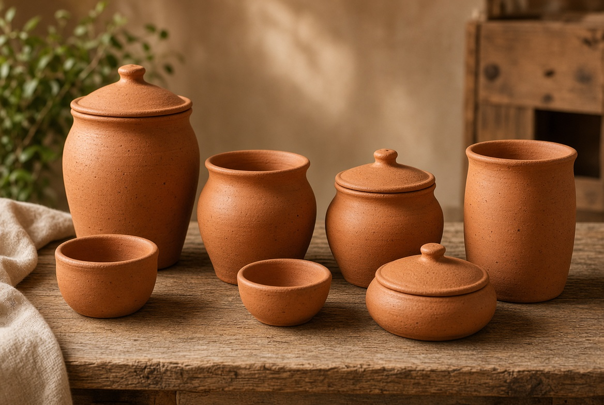
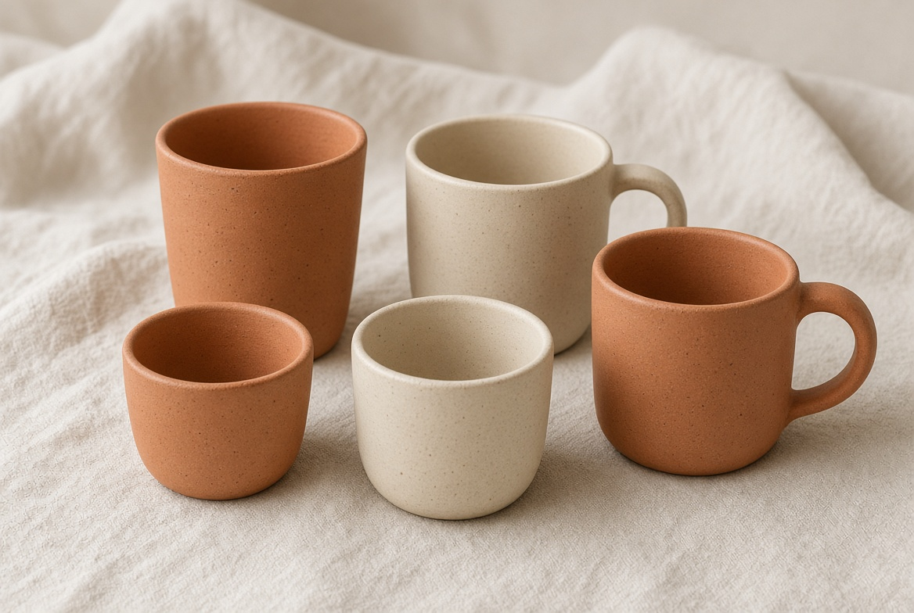
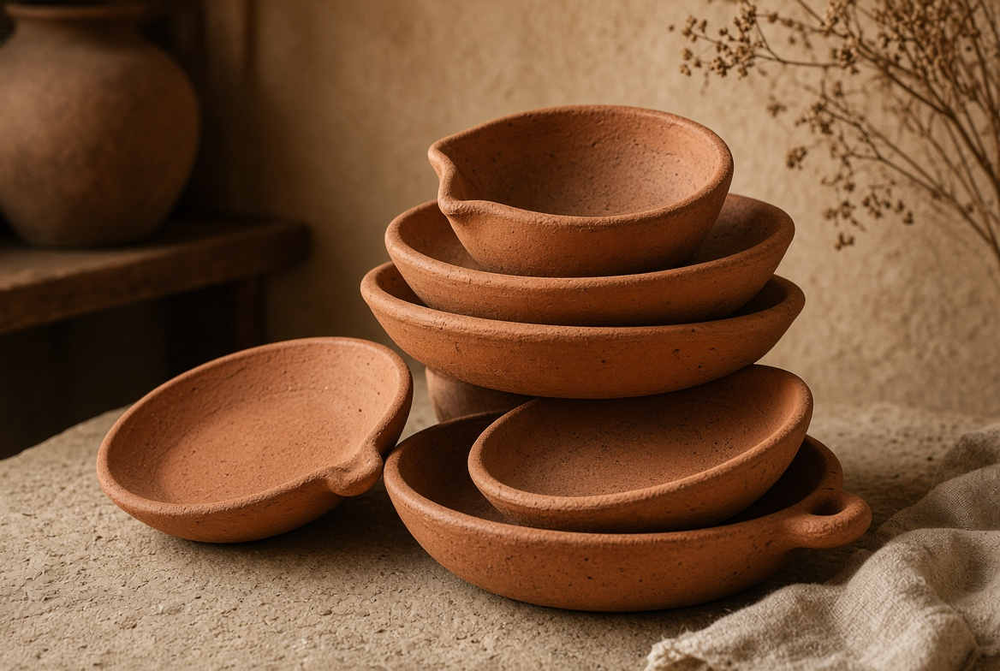
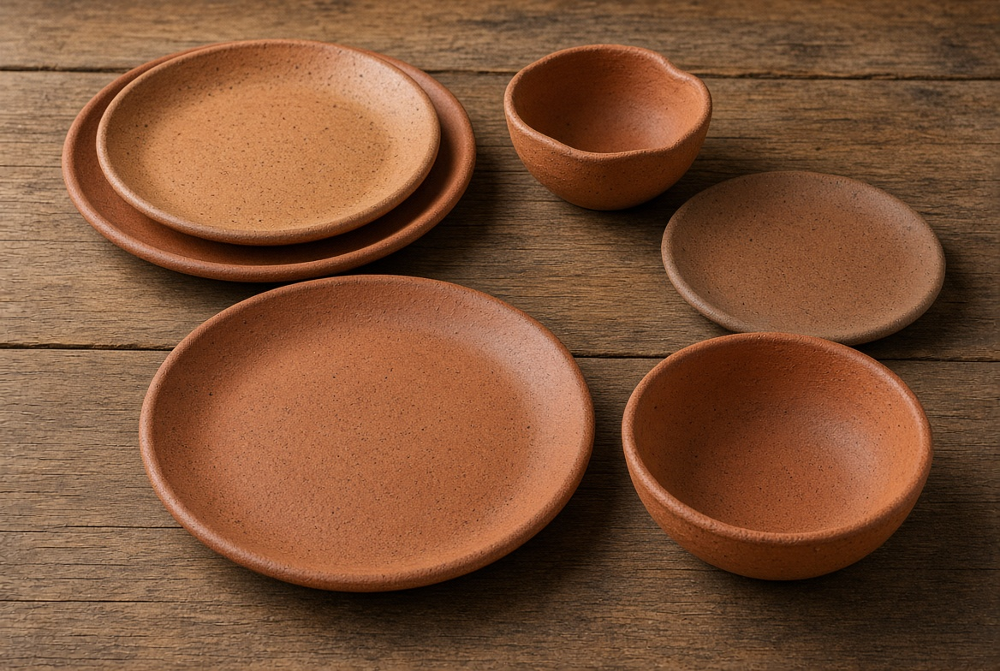
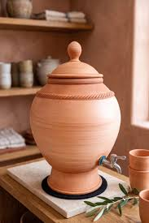

Pots, jars and cups
Lidded storage jars, open pots and tall drinking cups. Useful for water, dry goods and the table.
Handmade · fired clay · ready to ship
We sell and ship clay pots, plates, cups, bowls and water vessels. Each piece is shaped by hand, with the warm speckled finish of real terracotta.

What we do
Anike Clay Wares offers handmade clay pieces for homes, kitchens and gifts. Tell us what you need — a single cup, a set of plates, or a water dispenser — and we will confirm what is in stock and arrange shipping.
The collection
Lidded storage jars, open pots and tall drinking cups. Useful for water, dry goods and the table.

Handle mugs and handle-free cups in warm clay and soft cream.

Dinner plates, side plates and deep bowls with a matte, speckled surface.

Shallow dishes with a small lip, made for serving, pouring and stacking.

Large water dispensers that vary in size with a small tap, made for pouring and storing water.
Order
Send a note on WhatsApp with the piece you want, how many, and where it should be delivered. We reply with availability and shipping.
Chat on WhatsApp · 0705 534 0535